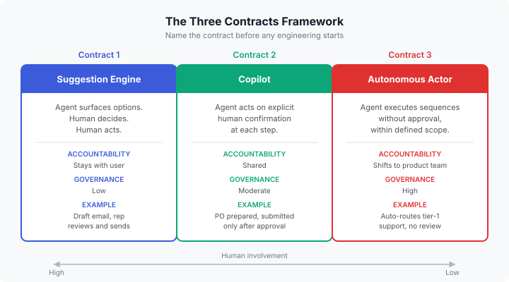
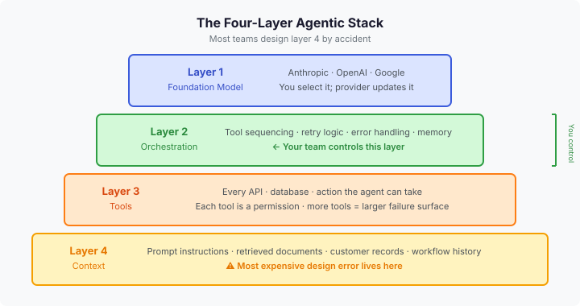

Phase 0 — AI Literacy: Foundations Every PM Needs¶
← Preface | Index | Next: Phase 1 — Discover and Decide →
The mental model problem¶
There is a pattern in how enterprise teams fail with agentic AI that is worth naming before anything else. The team builds the agent. The agent works. And then something unexpected happens: a user is confused about why the agent acted without asking; a supervisor approves everything the agent recommends without reading it; an edge case produces an output so wrong that someone escalates it to legal. The post-incident review finds that the product did exactly what it was designed to do.
The problem was not the engineering. The problem was the mental model the team was operating with when they made the design decisions. They were thinking about the agent as a faster version of a form. Or as a smarter search. Or as a chatbot with extra features. None of those mental models prepare you to ask the questions that matter: who is accountable when the agent acts? What happens when the agent is wrong? How do you test something that produces different results every time?
This section establishes the five mental model shifts every PM needs before any agentic project begins. These are not advanced concepts. They are prerequisites.
Mental model shift 1: Rules to reasoning¶
Traditional enterprise software follows explicit rules. A rule looks like this: if the order total exceeds the customer’s credit limit, reject the transaction. The rule is exact. It was written by a human, tested against known cases, and deployed with the expectation that it will execute identically for every matching condition forever.
This works well when every condition can be written down. It breaks when the problem is too large, too messy, or too ambiguous to enumerate completely. Customer service language is ambiguous. Medical documentation is ambiguous. Contract interpretation is ambiguous. You cannot write a rule for every possible way a customer can express frustration, or every variation of a clinical finding.
That is where machine learning comes in. Instead of following rules written by a human, a machine learning model learns patterns from examples. It has seen millions of customer service conversations and learned what “frustrated but salvageable” looks like, as distinct from “ready to churn.” It makes a judgment based on patterns, not on a rule.
Important
This shift from rules to reasoning is not an upgrade. It is a category change with a different set of governance requirements.
A rules-based system fails in ways you can test for and catch. A reasoning-based system fails in ways that require statistical monitoring across a distribution of outputs, not a finite set of test cases.
The practical implication for PMs: you cannot specify an agentic system the same way you specify a rules-based system. You cannot write acceptance criteria that say “the agent will do X.” You write criteria that say “the agent will do X at least Y percent of the time, with a defined distribution of failure modes, under the following input conditions.”
That is a different kind of specification. This framework shows you how to write it.
Mental model shift 2: Deterministic vs. probabilistic systems¶
A deterministic system produces the same output for the same input every time. Give it the same data, get the same result. You can test it with a finite set of cases, cover all the relevant conditions, and have high confidence that it will behave the same way in production.
A probabilistic system produces outputs based on learned patterns. Give it the same input, get a different result on a different run. This is not a bug. It is the fundamental behavior of a system that is sampling from a distribution of possible responses rather than executing a fixed computation.
Try this: ask any current AI model the same question ten times. “In twenty words or less, what is the difference between apples and oranges?” You will get ten different answers, all of them correct, all of them different. You are not seeing inconsistency. You are seeing the system draw a different sample from the space of valid answers each time.
Note
Most enterprise AI systems are hybrids. The billing rules are deterministic. The customer service agent sitting on top of them is probabilistic. The inventory system is deterministic. The demand forecasting model feeding it is probabilistic.
Knowing which parts of your system are probabilistic tells you where your governance burden lives. The deterministic parts can be tested with a finite set of cases. The probabilistic parts require ongoing monitoring, statistical testing, and a fundamentally different standard of evidence for what “working” means.
The implication for your backlog: a story that says “the system correctly identifies high-risk transactions” cannot have a simple pass/fail acceptance criterion for a probabilistic component. It needs a performance threshold, a measurement methodology, and a monitoring plan. If your team is writing acceptance criteria for an AI feature that could have been written for a deterministic one, the criteria are wrong.
Mental model shift 3: The Three Contracts framework¶
This is the single most important framework in this entire wiki. Before any other design decision is made about an agentic feature, the PM must answer one question: which contract does this feature operate under?
The Three Contracts framework names three fundamentally different types of agentic systems, each with a different accountability model, test strategy, and governance requirement. They are not stages on a maturity scale. They are different products with different designs.

Contract 1: Suggestion Engine
The agent surfaces options. The human decides. The human acts.
Accountability stays with the user. The agent’s worst-case failure is a bad suggestion the user ignores. Testing focuses on the quality and relevance of recommendations. Governance burden is low.
Example: a feature that drafts a customer email and waits for the sales rep to review, edit, and send.
Contract 2: Copilot
The agent acts on explicit human confirmation, step by step. The human remains in the loop for each consequential action. Accountability is shared.
Testing covers the quality of the decision package presented at each confirmation point. Governance burden is moderate.
Example: a feature that prepares a purchase order and presents it for approval, then submits only after the approver explicitly confirms.
Contract 3: Autonomous Actor
The agent executes sequences of decisions without further approval, within a defined scope. The human supervises the system, not the individual action.
Accountability shifts to the product and platform team. Worst-case failure: a wrong action executed repeatedly and at scale before anyone notices. Testing must cover every edge case before release. Governance burden is high.
Example: a feature that automatically categorizes, routes, and responds to tier-1 customer service inquiries without human review.
The most expensive design mistake in agentic AI is a feature that presents itself to users as Contract 1 or 2 while being implemented as Contract 3. Users calibrate their trust to the stated contract. When the behavior diverges, that mismatch produces exactly the kind of failure that ends up in a post-incident review.
Name the contract before any engineering starts. Write it into the go/no-go document. Check it at every design review. If the contract is changing, that is a scope change and must be treated as one.
Mental model shift 4: Two channels, not one¶
Here is a question most agentic products cannot answer: how does a supervisor intervene when the agent is doing something wrong?
Most teams do not have a good answer because they only built one channel.
Channel 1 is the path from agent to user: outputs, recommendations, status updates, approval requests. This is the channel that gets roadmap attention, engineering resources, and launch criteria. It is the visible product.
Channel 2 is the path from human supervisor back to the agent: escalation, override, configuration change, governance intervention. Channel 2 carries the authority flow. It is how a human takes control when something is wrong. Without it, there is no real supervision; there is only observation. You can watch what the agent is doing, but you cannot do anything about it in time.
Warning
A well-designed agent with no Channel 2 is a liability waiting to scale. If you cannot interrupt the agent, override a decision, or pause an in-flight workflow, the only available response to a problem is a full shutdown. That is not supervision. That is an emergency shutdown preceded by damage.
Design both channels before you ship either.
Mental model shift 5: The four-layer stack¶
When your engineering team says “we’re adding an AI feature,” they are usually talking about the first layer. There are four.

Layer 1: The foundation model. The large language model (LLM) from a provider like Anthropic, OpenAI, or Google. Your team selects it, but does not control it. The provider updates it on their own schedule.
Layer 2: The orchestration layer. The code your team writes to coordinate agent behavior: which tools to call in what sequence, how to handle retries, what to do when a tool returns an error, how to maintain memory across a multi-step workflow. This is the layer your team actually controls.
Layer 3: The tool layer. Every system the agent can access. Every API it can call. Every database it can query. Every action it can take. Every tool is a permission. The more tools, the larger the surface area for things to go wrong.
Layer 4: The context layer. What the agent reads before it acts. The instructions in its prompt. The documents retrieved to give it relevant information. The customer record it is working from. The previous steps in the current workflow.
Important
Most teams invest heavily in layers 1 through 3. They design layer 4 by accident.
This is the most expensive design error in agentic AI. A model without the right context is not a useful model; it is a confident model that will fill the gaps in its knowledge with plausible-sounding inferences. Intelligence without context is just confidence.
The Iceberg: what stays behind when data moves¶
When data moves from its source system into the agent’s context, it leaves things behind.
Think about a customer record in your CRM. The agent receives the customer’s name, account value, ticket history, and product usage data. Clean data. Complete fields. What does not travel:
The fact that this customer’s account is under a specific contractual SLA negotiated individually. That lives in a contract in a document management system not connected to the CRM.
The fact that this customer filed a formal complaint three months ago that is under active legal review, and anything the agent says to this customer could be discoverable. That context lives in a legal system not connected to the CRM.
The fact that the “high-value” flag on the account was computed using a scoring model retired six months ago. The flag is present; the rule that defined it is not.
The data the agent sees is accurate. The context that gives the data its meaning is below the waterline, invisible to the agent.
Note
The Iceberg is the name for this pattern: context stays behind when data moves. The design response is an explicit context contract: a named specification of what context must travel with the data when it moves into the agent’s working memory.
The question to ask at every design review: what does this agent need to know that is not in the data it will receive? Who owns that information? Can it be surfaced? If not, what decisions should the agent be blocked from making without it?
Architectures that assume the agent will figure out what it needs should be rejected at the design review, not discovered as a problem after the first consequential error.
Specificity, sensitivity, and the threshold decision¶
For any agentic feature that makes a classification (is this transaction fraudulent? is this customer at risk of churn? does this clinical note indicate a problem?), three statistical terms determine product behavior. You do not need to be a statistician to use them. You need to understand what decisions they translate to.
Sensitivity (also called recall) is the proportion of real positive cases the model correctly identifies. High sensitivity catches most real cases but produces more false alarms.
Specificity is the proportion of true negative cases the model correctly dismisses. High specificity produces fewer false alarms but misses more real cases.
AUC (Area Under the Curve) is a single number summarizing how well the model separates real positives from real negatives across all possible sensitivity/specificity combinations. A perfect model has an AUC of 1.0. Random guessing gives 0.5.
The threshold is the point at which the model decides to act. Lower it and the model acts more often. Raise it and the model acts less often.
Important
The threshold is a product decision, not a model decision. Your data science team cannot set it for you. Only you know what a false positive costs your users versus what a missed case costs them.
A fraud model set too aggressively blocks legitimate transactions. Set too loosely, it lets fraud through. The right threshold reflects your actual cost structure, not the threshold that maximizes a statistical metric.
Case study: DAX Copilot and the metric that did not matter¶
The DAX Copilot is an AI clinical documentation assistant used by physicians to reduce the administrative burden of note-writing. A 2024 randomized controlled trial (Tipirneni et al., NEJM AI, 215 physicians) found high adoption rates and positive physician feedback. The product was well-designed for its contract: Contract 2, a copilot that assists with documentation while the human reviews before submitting.
The trial found no statistically significant improvement in documentation time or physician cognitive load compared to the control group.
The product worked. The acceptance criteria were met. The contract was correct. The metric tracked (adoption) was not the metric that mattered (time saved, cognitive load reduced). The team that designed the trial did not connect the contract to the outcome measurement.
This is an AI literacy failure before it is an evaluation failure. The lesson applies to any agentic feature where “people are using it” is treated as evidence that “it is working.” Adoption is a leading indicator of potential value. It is not a measure of delivered value.
← Preface | Index | Next: Phase 1 — Discover and Decide →